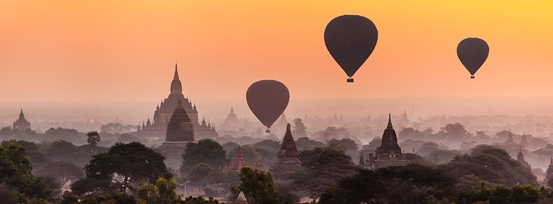
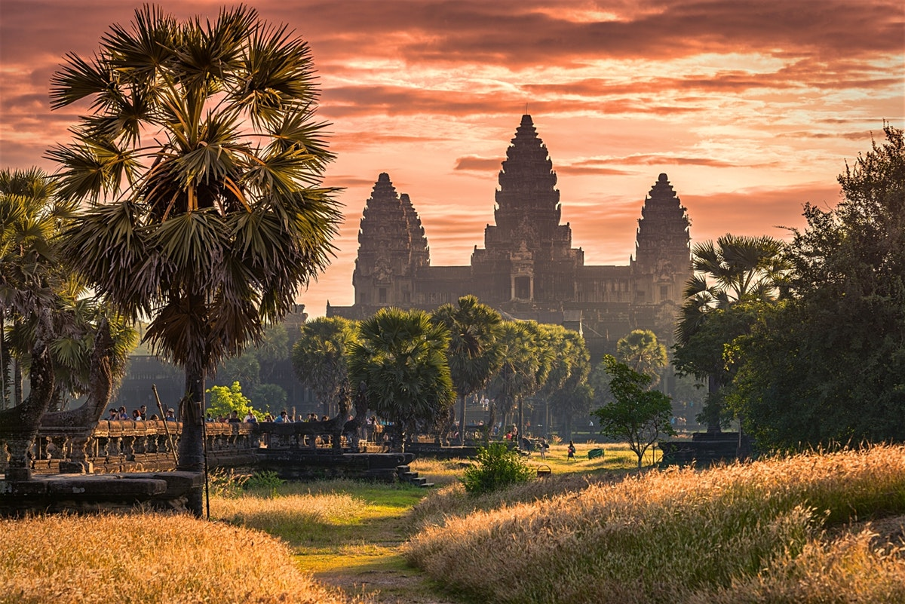
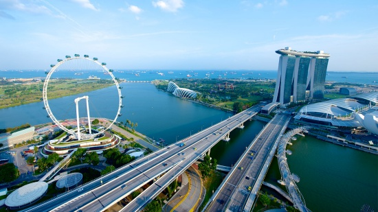
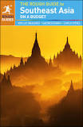
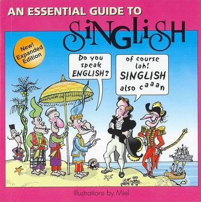

Asia Travel Guide

Asia is Earth's largest and most populous continent, located primarily in the Eastern and Northern Hemispheres. It shares the continental landmass of Eurasia with the continent of Europe and the continental landmass of Afro-Eurasia with both Europe and Africa. Asia covers an area of 44,579,000 square kilometres (17,212,000 sq mi), about 30% of Earth's total land area and 8.7% of the Earth's total surface area. The continent, which has long been home to the majority of the human population,[5] was the site of many of the first civilizations. Asia is notable for not only its overall large size and population, but also dense and large settlements, as well as vast barely
populated regions. Its 4.5 billion people
constitute roughly 60% of the world's population
.
Places to travel in Asia
1. Siem Reap, Cambodia

4. Singapore, Singapore

5. Hong Kong, China

Typical cost
Accomendation-To make a relatively accurate budget calculation for your South East Asia trip, plan for $50 – $60 per day for a couple, which equals $1,500 – $1,800/month. Plan on $35 – $40 per day for one person travelling, which equals $1,050 – $1,200/month.
Transportation-affodable
Food-Your usual daily expenses will be roughly £22 a day on average, with some days being less and some days being more. This gave me enough money to stay in a cheap hostel, drink (heavily!), eat street food or in a cheap restaurant, get a cab or tuk tuk or 2, & get my laundry done when needed.
Travelling Tips
- Always have toilet paper – There is never any around, but when you do find some, stock up!
- Research cab fares before you arrive – One of the biggest scams in southeast Asia is with cabs ripping people off. Know how much it should cost to get from where you are arriving to your accommodation. You can usually figure out what cabs should cost by asking others you meet on the road. Or find out what cab companies are trusted. Email a hostel and ask.
- Know if there will be an ATM – You won’t have a problem with finding ATMs in most of SE Asia, but there will be the odd spot where there are none. Plan ahead! Some examples are El Nido, Philippines and Koh Rong, Cambodia.
- Wifi is everywhere, no need to buy SIM cards – Free wifi is honestly way easier to come by than expected and for the most part it is decent. That being said, SIM cards are super cheap so you’re not breaking the bank buying them. But why spend the money when you could easily save? And if you’re worried about getting lost, download Maps.me, an app that doesn’t need wifi to use maps!
- Always have USD – If you ever run out of the local currency USD will be accepted. Most boarders require you to pay in USD as well. I recommend getting some in your home country and bringing it with you, though some countries (like Cambodia) dispense USD as well as the local currency.
- Research scams to lookout for before you go to a new country/cross borders – A lot of scams in SE Asia are common, so make sure you know what to look out for. Most have to do with cabs, renting scooters, and crossing borders.
Important Information
- Plan around the weather – Check the weather for each of your destinations and plan around the heat. Avoid monsoon season and aim for the low season to get the best deals.
- ABudget – Asia can be as expensive or as cheap as you wish. It is possible to spend as little as £20 a day but I recommend at least £50 a day (per couple) is a good amount to budget. A typical day in Vietnam for us would cost: Private double room with ensuite: £11, breakfast (pancakes and juice from nearby restaurant): £4, taxi ride: 60p, attractions (museum entrance and park): 52p per person, lunch (overeating) at a local market: £4, attractions (Pagoda searching and general wandering around taking street photos): free, dinner (three course, sit down restaurant including two alcoholic drinks each): £15, beer at local bar: £1.20 and cocktails at local bar £1.60 = One day cost £37.92.
- Respect local beliefs – Whether its not touching peoples head, walking on the other side of the road from a monk or removing your shoes, read the signs and follow the rules. You’re a guest in the country so be as respectful as you would be if you were a guest at your in-laws home (my rule of thumb).
- Local water – Don’t drink water from the taps, it isn’t clean and will make you sick.
- xpect to get ripped off – Unfortunately, it will definitely happen at some point in your trip. You will get into a taxi who refuses to use the meter, have a tuk-tuk try and take you to his mates suit store or be massively overcharged for something weird looking on a stick. Haggle when you can, get out of taxis and make the most of your trip. On our first visit to Bangkok, we got frustrated with the taxis but after walking out of one or two, we always found someone around the corner who would use the meter.
Recommended Guides To Use
|  |
The Rough Guide to Southeast Asia On A Budget
Now available in PDF format. The Rough Guide to Southeast Asia on a Budget is the ultimate guide for budget-conscious independent travelers visiting this fascinating region. Updated by a team of expert writers, this edition of The Rough Guide to Southeast Asia on a Budget is packed with information to help you make the most of your time and money, including comprehensive transportation information, suggested itineraries, full-color maps, and advice on local culture, food and language. |
|
Lonely Planet Story - Once While Travelling (Wheeler Tony)
The highly readable Lonely Planet Story: Once While Travelling is a unique mix of autobiography, business history and travel book. In 2007, the Wheelers shocked the publishing industry by selling to BBC worldwide. Above all, their memoir reveals the spirit of adventure that has made them, according to the New York Daily Times, `the specialists in guiding weird folks to weird places'. |
|  |
An Essential Guide to Singlish
Singlish is one of the most entertaining of all the Asian Englishes and ought to be practiced by anyone visiting Singapore. Even a little knowledge of the language will help visitors to better understand local culture and learning to speak a few words or phrases can enhance the experience of dining out, shopping, and even getting about town. |
|
The Rough Guide to ThailandThis updated edition is in full color, with clear maps and vibrant photography that brings Thailand to life. It includes detailed information on everything from the most stylish bars in Bangkok to diving on Ko Tao. Whether you want to trek in the hills near Chang Mai, explore the temples and waterways of Bangkok, or just relax on an idyllic beach on one of the country's numerous islands, this fully updated guide will lead you to the best attractions in Thailand. |